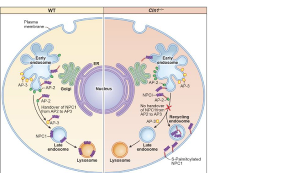

Neuronal ceroid lipofuscinosis 1 is a PPT1-related neuronal ceroid lipofuscinosis that classically presents as infantile NCL. Loss of palmitoyl-protein thioesterase 1 impairs lysosomal depalmitoylation of S-palmitoylated proteins, producing autofluorescent lysosomal storage material, synaptic trafficking defects, neuroinflammation, autophagy dysregulation, progressive neurologic deterioration, seizures, motor decline, visual loss, and premature death.
Ask a research question about Neuronal Ceroid Lipofuscinosis 1. OpenScientist will conduct autonomous deep research using the Disorder Mechanisms Knowledge Base and PubMed literature (typically 10-30 minutes).
Do not include personal health information in your question. Questions and results are cached in your browser's local storage.
name: Neuronal Ceroid Lipofuscinosis 1
category: Mendelian
creation_date: "2026-06-13T00:00:00Z"
description: >
Neuronal ceroid lipofuscinosis 1 is a PPT1-related neuronal ceroid
lipofuscinosis that classically presents as infantile NCL. Loss of
palmitoyl-protein thioesterase 1 impairs lysosomal depalmitoylation of
S-palmitoylated proteins, producing autofluorescent lysosomal storage
material, synaptic trafficking defects, neuroinflammation, autophagy
dysregulation, progressive neurologic deterioration, seizures, motor decline,
visual loss, and premature death.
disease_term:
preferred_term: neuronal ceroid lipofuscinosis 1
term:
id: MONDO:0009744
label: neuronal ceroid lipofuscinosis 1
synonyms:
- CLN1
- CLN1 disease
- neuronal ceroid lipofuscinosis type 1
- PPT1 neuronal ceroid lipofuscinosis
- infantile neuronal ceroid lipofuscinosis
- infantile Batten disease
parents:
- Neuronal Ceroid Lipofuscinosis
- Lysosomal Storage Disease
- Neurodegenerative Disease
references:
- reference: PMID:20301601
title: "Neuronal Ceroid Lipofuscinoses Overview."
tags:
- GeneReviews
findings: []
- reference: PMID:23838030
title: "Classification and natural history of the neuronal ceroid lipofuscinoses."
findings:
- statement: Classic infantile CLN1 begins between 6 and 24 months with rapid psychomotor regression, ataxia, myoclonus, seizures, and visual failure.
- statement: Later-onset CLN1 phenotypes have more protracted courses but still progress to premature death.
- reference: PMID:34000449
title: "Management of CLN1 Disease: International Clinical Consensus."
findings:
- statement: CLN1 disease causes developmental delay, psychomotor regression, seizures, ataxia, movement disorders, visual impairment, and early death.
- reference: PMID:38211816
title: "Disruption of lysosomal nutrient sensing scaffold contributes to pathogenesis of a fatal neurodegenerative lysosomal storage disease."
findings:
- statement: CLN1 disease is caused by CLN1/PPT1 loss of function.
- statement: PPT1 catalyzes depalmitoylation of S-palmitoylated proteins.
- reference: PMID:38798824
title: "Akap5 links synaptic dysfunction to neuroinflammatory signaling in a mouse model of infantile neuronal ceroid lipofuscinosis."
findings:
- statement: CLN1 neurons accumulate autofluorescent lysosomal storage material.
- statement: PPT1 loss disrupts synaptic protein trafficking and neuroinflammatory signaling.
- reference: PMID:40333988
title: "Niemann Pick C1 mistargeting disrupts lysosomal cholesterol homeostasis contributing to neurodegeneration in a Batten disease model."
findings:
- statement: PPT1 deficiency misroutes NPC1 and activates mTORC1 through lysosomal cholesterol dysregulation.
inheritance:
- name: Autosomal recessive inheritance
description: >
CLN1 belongs to the NCL gene set that is predominantly autosomal recessive;
affected individuals have biallelic loss-of-function PPT1 variants.
inheritance_term:
preferred_term: Autosomal recessive inheritance
term:
id: HP:0000007
label: Autosomal recessive inheritance
evidence:
- reference: PMID:21990111
supports: SUPPORT
evidence_source: HUMAN_CLINICAL
snippet: "Most are autosomal recessively inherited."
explanation: >
This NCL mutation-spectrum review states that most NCLs are autosomal
recessive and includes PPT1/CLN1 among the identified NCL genes.
progression:
- phase: Classic infantile onset
age_range: 6 to 24 months
notes: >
Classic CLN1 begins after early infancy with rapid psychomotor regression,
ataxia, myoclonus, seizures, and visual failure.
evidence:
- reference: PMID:23838030
reference_title: "Classification and natural history of the neuronal ceroid lipofuscinoses."
supports: SUPPORT
evidence_source: OTHER
snippet: "between 6 and 24 months there is rapid psychomotor regression, ataxia, myoclonus, seizures, and visual failure."
explanation: >
Natural-history review evidence supports the classic infantile onset
window and early progression pattern for CLN1 disease.
- phase: Progressive phenotype-dependent neurodegeneration
age_range: Childhood through adulthood, depending on onset subtype
notes: >
Later-onset CLN1 variants have more protracted disease, but all forms
progress to premature death with accumulating neurologic disability.
evidence:
- reference: PMID:23838030
reference_title: "Classification and natural history of the neuronal ceroid lipofuscinoses."
supports: SUPPORT
evidence_source: OTHER
snippet: "All forms progress to premature death, but in general, the later the onset, the more protracted the course."
explanation: >
This distinguishes infantile, late-infantile, juvenile, and adult CLN1
courses while preserving their shared progressive fatal trajectory.
genetic:
- name: PPT1
association: Causal biallelic pathogenic variants
presence: Positive
gene_term:
preferred_term: PPT1
term:
id: hgnc:9325
label: PPT1
notes: >
PPT1 encodes palmitoyl-protein thioesterase 1, a lysosomal thioesterase
that removes palmitate from S-palmitoylated proteins. Biallelic
loss-of-function variants define the CLN1 enzyme-deficiency branch of NCL.
evidence:
- reference: PMID:38211816
supports: SUPPORT
evidence_source: MODEL_ORGANISM
snippet: "This disease is caused by loss-of-function mutations in the CLN1 gene, encoding palmitoyl-protein thioesterase-1 (PPT1)."
explanation: >
This CLN1 mechanism paper directly links CLN1/PPT1 loss of function to
CLN1 disease.
pathophysiology:
- name: PPT1 lysosomal depalmitoylation failure
conforms_to: "lysosomal_substrate_accumulation#Lysosomal Substrate Accumulation"
description: >
PPT1 deficiency prevents normal depalmitoylation and lysosomal clearance of
S-palmitoylated proteins. This produces autofluorescent storage material in
neurons and disrupts lysosomal nutrient sensing, mTORC1/autophagy control,
cholesterol trafficking, synaptic protein trafficking, and inflammatory
glial signaling.
cell_types:
- preferred_term: neuron
term:
id: CL:0000540
label: neuron
- preferred_term: microglial cell
term:
id: CL:0000129
label: microglial cell
- preferred_term: astrocyte
term:
id: CL:0000127
label: astrocyte
biological_processes:
- preferred_term: lysosomal transport
modifier: DYSREGULATED
term:
id: GO:0007041
label: lysosomal transport
- preferred_term: autophagy
modifier: DYSREGULATED
term:
id: GO:0006914
label: autophagy
evidence:
- reference: PMID:38211816
supports: SUPPORT
evidence_source: MODEL_ORGANISM
snippet: "PPT1 catalyzes depalmitoylation of S-palmitoylated proteins for degradation and clearance by lysosomal hydrolases."
explanation: >
This establishes the upstream lysosomal enzymatic function lost in CLN1.
- reference: PMID:38798824
supports: SUPPORT
evidence_source: MODEL_ORGANISM
snippet: "CLN1 is characterized by the accumulation of autofluorescent lysosomal storage material (AFSM) in neurons and robust neuroinflammation."
explanation: >
This supports lysosomal storage accumulation and neuroinflammation as
core CLN1 pathobiology.
downstream:
- target: Autophagy Suppression and Neurodegeneration
description: >
PPT1 loss disrupts lysosomal nutrient sensing and activates mTORC1,
suppressing autophagy and contributing to neurodegeneration.
causal_link_type: INDIRECT_UNKNOWN_INTERMEDIATES
evidence:
- reference: PMID:38211816
supports: SUPPORT
evidence_source: MODEL_ORGANISM
snippet: "Despite this defect, mTORC1 was hyperactivated via the IGF1/PI3K/Akt-signaling pathway, which suppressed autophagy contributing to neuropathology."
explanation: >
This mouse and patient-cell study links PPT1 loss to mTORC1 activation,
autophagy suppression, and neuropathology.
- target: Lysosomal Cholesterol Homeostasis Defect
description: >
PPT1 deficiency misroutes NPC1, leading to lysosomal cholesterol
dysregulation, mTORC1 activation, autophagy inhibition, and neuronal
injury in CLN1 model systems.
causal_link_type: INDIRECT_UNKNOWN_INTERMEDIATES
evidence:
- reference: PMID:40333988
supports: SUPPORT
evidence_source: MODEL_ORGANISM
snippet: "In Cln1-/- mice, Ppt1 deficiency misroutes NPC1-dysregulating lysosomal cholesterol homeostasis."
explanation: >
This supports a CLN1-specific lysosomal cholesterol trafficking branch.
- target: AKAP5-NFAT Synaptic Neuroinflammatory Signaling
description: >
Excessive AKAP5 palmitoylation at Ppt1-deficient synapses sensitizes
NFAT signaling and links synaptic trafficking defects to
neuroinflammation.
causal_link_type: INDIRECT_UNKNOWN_INTERMEDIATES
evidence:
- reference: PMID:38798824
supports: SUPPORT
evidence_source: MODEL_ORGANISM
snippet: "(NFAT), was sensitized in Ppt1-/- cortical neurons."
explanation: >
This CLN1 mouse-model study directly connects PPT1 loss with AKAP5,
synaptic protein trafficking, NFAT signaling, and neuroinflammation.
- name: Autophagy Suppression and Neurodegeneration
description: >
PPT1 loss disrupts lysosomal nutrient sensing and hyperactivates mTORC1
through IGF1/PI3K/Akt signaling, suppressing autophagy and contributing to
neurologic injury.
cell_types:
- preferred_term: neuron
term:
id: CL:0000540
label: neuron
biological_processes:
- preferred_term: autophagy
modifier: DECREASED
term:
id: GO:0006914
label: autophagy
evidence:
- reference: PMID:38211816
supports: SUPPORT
evidence_source: MODEL_ORGANISM
snippet: "Despite this defect, mTORC1 was hyperactivated via the IGF1/PI3K/Akt-signaling pathway, which suppressed autophagy contributing to neuropathology."
explanation: >
The study supports a downstream CLN1 mechanism in which mTORC1 activation
suppresses autophagy and worsens neuropathology.
- name: Lysosomal Cholesterol Homeostasis Defect
description: >
Persistent NPC1 palmitoylation and misrouting in PPT1 deficiency impair
lysosomal cholesterol homeostasis, producing cholesterol-dependent mTORC1
activation, autophagy inhibition, and neuronal injury.
cell_types:
- preferred_term: neuron
term:
id: CL:0000540
label: neuron
biological_processes:
- preferred_term: cholesterol transport
modifier: DYSREGULATED
term:
id: GO:0030301
label: cholesterol transport
evidence:
- reference: PMID:40333988
supports: SUPPORT
evidence_source: MODEL_ORGANISM
snippet: "In Cln1-/- mice, Ppt1 deficiency misroutes NPC1-dysregulating lysosomal cholesterol homeostasis."
explanation: >
This establishes a distinct cholesterol trafficking branch downstream of
PPT1 deficiency.
- name: AKAP5-NFAT Synaptic Neuroinflammatory Signaling
description: >
PPT1 deficiency causes excess AKAP5 palmitoylation at synapses, aberrant
GluA1 synaptic scaling, NFAT sensitization, and increased
neuroinflammatory signaling.
cell_types:
- preferred_term: neuron
term:
id: CL:0000540
label: neuron
- preferred_term: microglial cell
term:
id: CL:0000129
label: microglial cell
evidence:
- reference: PMID:38798824
supports: SUPPORT
evidence_source: MODEL_ORGANISM
snippet: "the absence of depalmitoylation stifles synaptic protein trafficking and contributes to neuroinflammation via an Akap5-associated mechanism."
explanation: >
This defines the AKAP5/NFAT synaptic-neuroinflammatory branch as a
top-level downstream mechanism in CLN1.
phenotypes:
- name: Developmental regression
description: >
Classic infantile CLN1 causes rapid loss of acquired psychomotor skills.
phenotype_term:
preferred_term: Developmental regression
term:
id: HP:0002376
label: Developmental regression
evidence:
- reference: PMID:23838030
supports: SUPPORT
evidence_source: OTHER
snippet: "between 6 and 24 months there is rapid psychomotor regression, ataxia, myoclonus, seizures, and visual failure."
explanation: >
This CLN1 natural-history passage directly supports psychomotor
regression in the classic infantile phenotype.
- name: Myoclonus
description: Myoclonus is part of the classic infantile CLN1 neurologic presentation.
phenotype_term:
preferred_term: Myoclonus
term:
id: HP:0001336
label: Myoclonus
evidence:
- reference: PMID:23838030
supports: SUPPORT
evidence_source: OTHER
snippet: "between 6 and 24 months there is rapid psychomotor regression, ataxia, myoclonus, seizures, and visual failure."
explanation: >
This natural-history review explicitly lists myoclonus among classic
infantile CLN1 clinical features.
- name: Seizure
description: >
Epileptic seizures are part of the shared NCL neurologic phenotype and are
expected in severe CLN1 disease.
phenotype_term:
preferred_term: Seizure
term:
id: HP:0001250
label: Seizure
evidence:
- reference: PMID:35628533
supports: SUPPORT
evidence_source: OTHER
snippet: "Common symptoms of NCLs include the progressive loss of vision, mental and motor deterioration, epileptic seizures, premature death, and, in rare adult-onset cases, dementia."
explanation: >
CLN1 is an NCL subtype; this review summarizes seizures among the common
NCL manifestations.
- name: Visual impairment
description: Progressive visual loss is part of the NCL clinical spectrum.
phenotype_term:
preferred_term: Visual impairment
term:
id: HP:0000505
label: Visual impairment
evidence:
- reference: PMID:35628533
supports: SUPPORT
evidence_source: OTHER
snippet: "Common symptoms of NCLs include the progressive loss of vision, mental and motor deterioration, epileptic seizures, premature death, and, in rare adult-onset cases, dementia."
explanation: >
This broad NCL review supports progressive loss of vision as a common NCL
manifestation relevant to CLN1.
- name: Motor deterioration
description: Progressive motor decline occurs as part of CLN1/NCL neurodegeneration.
phenotype_term:
preferred_term: Motor deterioration
term:
id: HP:0002333
label: Motor deterioration
evidence:
- reference: PMID:35628533
supports: SUPPORT
evidence_source: OTHER
snippet: "Common symptoms of NCLs include the progressive loss of vision, mental and motor deterioration, epileptic seizures, premature death, and, in rare adult-onset cases, dementia."
explanation: >
This review explicitly includes motor deterioration in the NCL phenotype
spectrum.
- name: Mental deterioration
description: Progressive cognitive or mental decline occurs with CLN1/NCL neurodegeneration.
phenotype_term:
preferred_term: Mental deterioration
term:
id: HP:0001268
label: Mental deterioration
evidence:
- reference: PMID:35628533
supports: SUPPORT
evidence_source: OTHER
snippet: "Common symptoms of NCLs include the progressive loss of vision, mental and motor deterioration, epileptic seizures, premature death, and, in rare adult-onset cases, dementia."
explanation: >
This broad NCL review supports mental deterioration as part of the shared
NCL phenotype relevant to CLN1.
treatments:
- name: Experimental hematopoietic stem/progenitor cell gene therapy
description: >
Lentiviral hPPT1-overexpressing HSPC therapy is a preclinical,
disease-targeted strategy for CLN1. It is not established clinical care, but
it supports the biological plausibility of PPT1 restoration.
treatment_term:
preferred_term: gene therapy
term:
id: MAXO:0001001
label: gene therapy
evidence:
- reference: PMID:36876653
supports: SUPPORT
evidence_source: MODEL_ORGANISM
snippet: "transplantation of HSPCs over-expressing hPPT1 by lentiviral gene transfer enhances the therapeutic benefit of HSPCs transplant"
explanation: >-
Mouse-model data support PPT1-restoring HSPC gene therapy as a
disease-targeted experimental CLN1 strategy.
Question: You are an expert researcher providing comprehensive, well-cited information.
Provide detailed information focusing on: 1. Key concepts and definitions with current understanding 2. Recent developments and latest research (prioritize 2023-2024 sources) 3. Current applications and real-world implementations 4. Expert opinions and analysis from authoritative sources 5. Relevant statistics and data from recent studies
Format as a comprehensive research report with proper citations. Include URLs and publication dates where available. Always prioritize recent, authoritative sources and provide specific citations for all major claims.
Please provide a comprehensive research report on Neuronal Ceroid Lipofuscinosis 1 covering all of the disease characteristics listed below. This report will be used to populate a disease knowledge base entry. Be thorough and cite primary literature (PMID preferred) for all claims.
For each section, suggested databases/resources are listed. These are the first places you should search for information on each topic.
Search first: OMIM, Orphanet, ICD-10/ICD-11, MeSH, PubMed
Search first: PubMed, Cochrane Library, UpToDate, clinical guidelines, ClinVar, ClinGen, GWAS Catalog, PheGenI, CTD, CDC, WHO, epidemiological databases
Search first: PubMed, Cochrane Library, clinical trial databases, GWAS Catalog, gnomAD, WHO, CDC, nutrition databases
Search first: CTD, PubMed, PheGenI, GxE databases
Search first: HPO (Human Phenotype Ontology), OMIM, Orphanet, PubMed, clinicaltrials.gov, MedDRA, SNOMED CT, DECIPHER, LOINC
For each phenotype, provide: - Phenotype type: symptoms, clinical signs, physical manifestations, behavioral changes, or laboratory abnormalities
For symptoms/signs: HPO, OMIM, Orphanet, PubMed For behavioral changes: HPO, DSM, RDoC (Research Domain Criteria), PubMed For laboratory abnormalities: LOINC, SNOMED CT, LabTests Online, PubMed - Phenotype characteristics: Search first: OMIM, Orphanet, HPO, PubMed - Age of symptom onset (neonatal, childhood, adult-onset, late-onset) - Symptom severity (mild, moderate, severe, variable) - Symptom progression (stable, progressive, episodic, fluctuating) - Frequency among affected individuals (percentage or qualitative) - Quality of life impact: Effects on daily functioning and well-being (per-phenotype when possible) Search first: EQ-5D database, SF-36, WHO QOL databases, PubMed - Suggest HPO (Human Phenotype Ontology) terms for each phenotype
Search first: OMIM, ClinVar, HGMD, Ensembl, NCBI Gene
Search first: ENCODE, Roadmap Epigenomics, MethBase, DiseaseMeth
Search first: DECIPHER, ClinVar, ECARUCA, UCSC Genome Browser
Search first: CTD (Comparative Toxicogenomics Database), TOXNET, PubMed, EPA databases
Search first: CDC databases, WHO, PubMed, NHANES
Search first: NCBI Taxonomy, ViPR, BV-BRC, MicrobeDB, GIDEON
Search first: KEGG, Reactome, WikiPathways, PathBank, BioCyc
Search first: Gene Ontology (GO), Reactome, KEGG, PubMed
Search first: UniProt, PDB (Protein Data Bank), InterPro, Pfam, AlphaFold
Search first: KEGG, BioCyc, HMDB (Human Metabolome Database), BRENDA
Search first: ImmPort, Immunome Database, IEDB, Gene Ontology
Search first: PubMed, Gene Ontology, Reactome
Search first: BRENDA, UniProt, KEGG, OMIM, PubMed
Search first: ENCODE, Roadmap Epigenomics, MethBase, DiseaseMeth
For each mechanism, describe: - The causal chain from initial trigger to clinical manifestation - Which mechanisms are upstream vs downstream - What cell types and biological processes are involved - Suggest GO terms for biological processes and CL terms for cell types
Search first: Uberon, FMA (Foundational Model of Anatomy), OMIM, HPO, ICD-11, MeSH, SNOMED CT
Search first: Uberon, Human Protein Atlas, Cell Ontology, Human Cell Atlas, CellMarker, PanglaoDB
Search first: Gene Ontology (Cellular Component), UniProt, Human Protein Atlas
Search first: OMIM, Orphanet, HPO, PubMed
Search first: Disease registries, longitudinal cohort databases, natural history studies, PubMed, Orphanet, OMIM
Search first: Orphanet, CDC, WHO, GBD (Global Burden of Disease), national registries, SEER, disease registries
Search first: GTR (Genetic Testing Registry), GeneReviews, ClinGen
For each treatment, suggest MAXO (Medical Action Ontology) terms where applicable.
Search first: CDC vaccine schedules, WHO immunization, FDA vaccine database
Search first: CDC, WHO, behavioral intervention databases, Cochrane Library
Search first: NSGC resources, ACMG guidelines, GeneReviews
Search first: Clinical guidelines, FDA approvals, PubMed
Search first: NCBI Taxonomy
Search first: VBO (Vertebrate Breed Ontology)
Search first: NCBI Gene
Structure your response as a comprehensive narrative organized by the sections above. For each section, provide: - Factual content with specific details (numbers, percentages, gene names, variant nomenclature) - Ontology term suggestions (HPO, GO, CL, UBERON, CHEBI, MAXO, MONDO) where applicable - Evidence citations with PMIDs - Direct quotes from abstracts to support key claims - Clear indication when information is not available or not applicable for this disease
This report will be used to populate a disease knowledge base entry with: - Pathophysiology descriptions with causal chains - Gene/protein annotations (HGNC, GO terms) - Phenotype associations (HP terms) with frequencies - Cell type involvement (CL terms) - Anatomical locations (UBERON terms) - Chemical entities (CHEBI terms) - Treatment annotations (MAXO terms) - Evidence items with PMIDs and exact abstract quotes - Epidemiology, prognosis, diagnostic, and prevention information - Animal model descriptions with phenotype recapitulation details
Neuronal ceroid lipofuscinosis 1 (CLN1 disease) is a severe pediatric-onset lysosomal storage neurodegenerative disorder caused by biallelic loss-of-function variants in PPT1 (palmitoyl-protein thioesterase 1), leading to accumulation of autofluorescent storage material, progressive neurodegeneration, seizures, and vision loss, with typical fatality in childhood. Recent mechanistic work (2024–2025) links PPT1 deficiency to dysregulated lysosomal nutrient sensing and mTORC1/autophagy signaling, including an NPC1–cholesterol–OSBP axis that is pharmacologically targetable in mouse models, and identifies synaptic palmitoylation substrates connecting synaptic dysfunction to neuroinflammation. (peviani2023aninnovativehematopoietic pages 1-2, koster2024akap5linkssynaptic pages 1-2, appu2025niemannpickc1 pages 11-12)
| Category | CLN1 disease summary | Key details / numbers | Evidence |
|---|---|---|---|
| Disease / identifiers | Neuronal ceroid lipofuscinosis 1; CLN1 disease; infantile neuronal ceroid lipofuscinosis (INCL); infantile Batten disease | MONDO: MONDO:0009744; Orphanet: 228329. OMIM was not explicitly available in retrieved evidence. | (OpenTargets Search: Neuronal ceroid lipofuscinosis 1,CLN1 disease-PPT1, zhang2025neuronalceroidlipofuscinosis—concepts pages 1-3, specchio2021neuronalceroidlipofuscinosis pages 2-3) |
| Causal gene / protein | PPT1 encodes palmitoyl-protein thioesterase 1, a lysosomal depalmitoylating enzyme | Open Targets shows strongest disease-target association for PPT1 in neuronal ceroid lipofuscinosis 1. PPT1 removes palmitate from S-palmitoylated proteins to enable lysosomal degradation. | (OpenTargets Search: Neuronal ceroid lipofuscinosis 1,CLN1 disease-PPT1, peviani2023aninnovativehematopoietic pages 1-2, meschini2015characterizationofcellular pages 7-11) |
| Inheritance | Autosomal recessive Mendelian disorder | Usually caused by biallelic loss-of-function PPT1 variants; most common presentation is infantile CLN1. | (peviani2023aninnovativehematopoietic pages 1-2, zhang2025neuronalceroidlipofuscinosis—concepts pages 1-3) |
| Variant notes | Recurrent severe alleles are repeatedly cited in older molecular literature | R122W (c.364A>T) and R151X (c.451C>T) each account for about 20% of abnormal CLN1 alleles in the cited source; truncating variants predict near-total loss of activity. | (meschini2015characterizationofcellular pages 7-11) |
| Typical onset | Early childhood, classically infantile | Onset commonly 6–18 months for seizures/loss of motor function; broader cited range 6–24 months; developmental regression often evident by ~18 months. | (kaminiow2022recentinsightinto pages 1-2, specchio2021neuronalceroidlipofuscinosis pages 2-3, zhang2025neuronalceroidlipofuscinosis—concepts pages 1-3) |
| Core clinical features | Rapidly progressive neurodegeneration with visual, motor, cognitive, and seizure phenotype | Psychomotor regression, hypotonia/decreased tone, ataxia, myoclonus, epilepsy/seizures, loss of speech, visual failure, progressive brain atrophy/microcephaly, feeding difficulty; by 24 months many children become blind and lose cognitive/active motor skills. | (kaminiow2022recentinsightinto pages 1-2, specchio2021neuronalceroidlipofuscinosis pages 2-3, meschini2015characterizationofcellular pages 7-11) |
| Natural history / progression | Severe, progressive, usually fatal pediatric disease | Visual loss often appears around 12 months; by 2 years blindness with optic atrophy/macular-retinal changes may be present; disease progresses to spasticity/vegetative state in severe forms. | (grisolia2016theneuronalceroid pages 2-3, meschini2015characterizationofcellular pages 7-11) |
| Survival / prognosis | Poor without curative therapy | Death usually reported between 9 and 13 years in one review; another review states affected children “seldom survive past early childhood”; mouse-model review cites fatal outcome by 9–13 years. | (kaminiow2022recentinsightinto pages 1-2, specchio2021neuronalceroidlipofuscinosis pages 2-3, peviani2023aninnovativehematopoietic pages 1-2) |
| Epidemiology | Rare disease; most retrieved numbers are for NCL overall, not CLN1-specific | NCL incidence estimates: ~2/100,000 live births overall; 1.6–2.4/100,000 (USA), 2–2.5/100,000 (Denmark), 2.2/100,000 (Sweden), 3.9/100,000 (Norway), 4.8/100,000 (Finland), 7/100,000 (Iceland); one Italy estimate 0.98/100,000 and overall range 1–2.5/100,000. | (zhang2025neuronalceroidlipofuscinosis—concepts pages 1-3, kaminiow2022recentinsightinto pages 1-2, grisolia2016theneuronalceroid pages 2-3) |
| Key diagnostic modalities | Enzymatic, ultrastructural, neurophysiologic, imaging, and molecular testing | Low/absent PPT1 enzyme activity is a hallmark; ultrastructure shows GRODs (granular osmiophilic deposits); literature and trial protocols reference genetic testing, MRI, EEG, ERG, VEP, skin biopsy, and TEM monitoring. | (meschini2015characterizationofcellular pages 7-11, NCT00028262 chunk 1, NCT00028262 chunk 2) |
| Mechanistic highlight 2024: lysosomal nutrient sensing / mTORC1 | PPT1 loss disrupts lysosomal nutrient-sensing scaffold and drives abnormal mTORC1 activation with autophagy impairment | Misrouting of v-ATPase and Lamtor1 from lysosomal membrane; increased pS6K1 and p4E-BP1 in Cln1−/− cortex and patient lymphoblasts; PI3K/Akt inhibition suppressed mTORC1 activation, restored autophagy, and improved neuropathology in mice. | (bagh2024disruptionoflysosomal pages 2-4, bagh2024disruptionoflysosomal pages 1-2) |
| Mechanistic highlight 2025: NPC1 / OSBP / cholesterol axis | PPT1 deficiency misroutes NPC1, causing lysosomal cholesterol accumulation and cholesterol-mediated mTORC1 hyperactivation | Proposed chain: PPT1 loss → persistent NPC1 palmitoylation/mistrafficking → lysosomal cholesterol retention → OSBP/VAPA/VAPB-facilitated mTORC1 activation → autophagy inhibition → neurodegeneration; OSBP inhibitor OSW1 reduced CD68/GFAP/pS6K1/p4E-BP1 and improved neuron counts/cortical thickness in mice. | (appu2025niemannpickc1 pages 11-12, appu2025niemannpickc1 pages 1-3, appu2025niemannpickc1 pages 1-1, appu2025niemannpickc1 media e85e69d8) |
| Mechanistic highlight 2024: synaptic substrate AKAP5 | Excessive synaptic palmitoylation links synaptic dysfunction to neuroinflammatory signaling | Palmitoyl-proteomic screening identified AKAP5 as excessively palmitoylated in Ppt1−/− synapses; NFAT signaling was sensitized; FK506/tacrolimus modestly improved neuroinflammation in mice. | (koster2024akap5linkssynaptic pages 1-2) |
| Mechanistic highlight 2024: synaptic substrate GABAAR | PPT1 regulates inhibitory circuitry via depalmitoylation of GABAAR α1 | GABAAR α1 identified as PPT1 substrate; PPT1 depalmitoylates Cys260 and binds Cys165/Cys179; PPT1 or binding-site mutations enhanced inhibitory transmission, altered CA1 oscillations/phase coupling, and impaired learning/memory in young mice. | (koster2024akap5linkssynaptic pages 1-2) |
| 2023 therapeutic development: HSPC gene therapy | Hematopoietic stem/progenitor cell gene therapy showed strong preclinical benefit in CLN1 mouse model | Wild-type HSPC transplant gave partial benefit; lentiviral hPPT1-overexpressing HSPCs improved efficacy; ICV delivery transiently ameliorated disease; combined IV + ICV transduced HSPC transplantation gave the most robust benefit in pre-symptomatic and symptomatic animals. | (peviani2023aninnovativehematopoietic pages 1-2) |
| Stem-cell trials | Early human stem-cell transplantation studies reached phase 1 / phase Ib but remained limited | NCT00337636: Phase 1, HuCNS-SC surgical implantation + 12 months immunosuppression, 6 enrolled, CLN1/CLN2. NCT01238315: Phase Ib intracerebral HuCNS-SC, withdrawn for lack of accrual, 0 enrolled. | (NCT00337636 chunk 1, NCT01238315 chunk 1) |
| Small-molecule / repurposing trial | Cysteamine-based therapy explored clinically in CLN1 | NCT00028262: Phase 4 single-group trial of Cystagon (cysteamine bitartrate) + N-acetylcysteine; 10 enrolled (9 evaluable in summary), oral Cystagon every 6 h; primary outcome tracked GRODs by TEM over long-term follow-up; reported no major safety signal aside from one transient mild GI event; preliminary slowing of some progression parameters but not disease arrest. | (NCT00028262 chunk 1, NCT00028262 chunk 2) |
| Therapeutic status overall | No established curative therapy for CLN1 in retrieved evidence | Reviews describe preclinical ERT, gene therapy, immunomodulation, stem-cell approaches, and symptomatic care; unlike CLN2, no approved disease-specific therapy for CLN1 was documented in the retrieved 2023–2025 evidence set. | (specchio2021neuronalceroidlipofuscinosis pages 4-6, zhang2025neuronalceroidlipofuscinosis—concepts pages 1-3, zhang2025neuronalceroidlipofuscinosis—concepts pages 16-16) |
Table: This table condenses the most actionable disease-knowledge-base facts for CLN1 disease, including identifiers, genetics, natural history, diagnostics, epidemiology, and recent mechanistic and therapeutic developments. It is designed to support rapid curation with citation-linked evidence.
CLN1 disease is a subtype of neuronal ceroid lipofuscinosis (NCL; “Batten disease”), classically presenting as infantile neuronal ceroid lipofuscinosis (INCL) with progressive developmental regression, epilepsy, and vision loss, due to deficiency of the lysosomal enzyme PPT1. (specchio2021neuronalceroidlipofuscinosis pages 2-3, peviani2023aninnovativehematopoietic pages 1-2)
The information here is derived from aggregated disease-level reviews and primary research studies, plus ClinicalTrials.gov trial records (i.e., not EHR-derived). (peviani2023aninnovativehematopoietic pages 1-2, NCT00028262 chunk 1)
Genetic cause (primary): Loss-of-function variants in PPT1 cause CLN1 disease, with autosomal recessive inheritance. (peviani2023aninnovativehematopoietic pages 1-2, zhang2025neuronalceroidlipofuscinosis—concepts pages 1-3)
Gene/protein function (definition): PPT1 is a depalmitoylating lysosomal enzyme that cleaves long-chain fatty acyl groups from cysteine residues on palmitoylated proteins, enabling their lysosomal degradation. (peviani2023aninnovativehematopoietic pages 1-2, meschini2015characterizationofcellular pages 7-11)
Direct abstract quote (primary 2023 source): “We exploited this approach to treat the severe CLN1 neurodegenerative disorder… due to deficiency of palmitoyl-protein thioesterase 1 (hPPT1).” (Peviani et al., EMBO Mol Med, 2023-03; https://doi.org/10.15252/emmm.202215968) (peviani2023aninnovativehematopoietic pages 1-2)
For a Mendelian autosomal recessive disorder, the major risk factor is inheriting two pathogenic PPT1 alleles (family history/consanguinity may increase risk, but consanguinity data were not available in retrieved sources).
No specific genetic or environmental protective factors were identified in the retrieved CLN1-focused evidence.
No CLN1-specific gene–environment interaction evidence was identified in the retrieved sources.
The most commonly described presentation is infantile onset with rapid progression: - Onset window: seizures and loss of motor function reported at 6–18 months; some sources broaden infantile onset to 6–24 months. (kaminiow2022recentinsightinto pages 1-2, zhang2025neuronalceroidlipofuscinosis—concepts pages 1-3) - Progression milestones: by 24 months, children “become blind and lose all cognitive and active motor skill” in one review-style synthesis. (kaminiow2022recentinsightinto pages 1-2) - Neurologic features: developmental regression, hypotonia/ataxia, myoclonus, epilepsy, cognitive decline, progressive brain atrophy/microcephaly, feeding difficulties. (specchio2021neuronalceroidlipofuscinosis pages 2-3, meschini2015characterizationofcellular pages 7-11)
Direct abstract quote (2024 mechanistic CLN1 model paper): “CLN1 is characterized by the accumulation of autofluorescent lysosomal storage material (AFSM) in neurons and robust neuroinflammation.” (Koster et al., Frontiers in Synaptic Neuroscience, 2024-05; https://doi.org/10.3389/fnsyn.2024.1384625) (koster2024akap5linkssynaptic pages 1-2)
Direct disease-specific QoL instrument results (e.g., PedsQL, EQ-5D) were not present in the retrieved sources; clinically, progressive loss of vision, speech, and motor function implies profound functional dependence in early childhood. (kaminiow2022recentinsightinto pages 1-2)
One molecular-focused source reports recurrent alleles: - c.364A>T (p.Arg122Trp; R122W) - c.451C>T (p.Arg151Ter; R151X) and states: “These two mutations represent about 20% each of the total abnormal CLN1 alleles.” (meschini2015characterizationofcellular pages 7-11)
Variant classes include missense and truncating (nonsense/frameshift) variants; truncating variants are expected to cause near-complete loss of PPT1 activity in severe infantile forms. (meschini2015characterizationofcellular pages 7-11)
No CLN1-specific modifier genes, epigenetic signatures, or recurrent chromosomal abnormalities were identified in the retrieved evidence set.
CLN1 disease is primarily genetic; no consistent environmental contributors were identified in the retrieved evidence.
CLN1 disease is conceptualized as a lysosomal storage disorder in which PPT1 deficiency leads to impaired processing/turnover of palmitoylated proteins, lysosomal storage accumulation (lipofuscin/ceroid-like), neuroinflammation, synaptic dysfunction, and progressive neuron loss. (koster2024akap5linkssynaptic pages 1-2, meschini2015characterizationofcellular pages 7-11)
Bagh et al. (J Biol Chem, 2024-02; https://doi.org/10.1016/j.jbc.2024.105641) report that PPT1 deficiency disrupts trafficking of lysosomal nutrient-sensing scaffold components (including v-ATPase/Lamtor1), and is associated with hyperactivation of mTORC1 (elevated pS6K1/p4E-BP1) and autophagy dysregulation in Cln1−/− mouse cortex and patient lymphoblasts. (bagh2024disruptionoflysosomal pages 2-4, bagh2024disruptionoflysosomal pages 1-2)
Key quantitative detail: Western blot evidence reports significant increases in pS6K1 and p4E-BP1 (n=4; p<0.05) in Cln1−/− cortex and patient lymphoblasts. (bagh2024disruptionoflysosomal pages 2-4)
Mechanistic chain (as presented): PPT1 loss → mistrafficking of lysosomal nutrient-sensing components → aberrant IGF1/PI3K/Akt-driven mTORC1 activation → autophagy suppression → neurodegeneration, with pharmacologic PI3K/Akt inhibition improving pathology in mice. (bagh2024disruptionoflysosomal pages 1-2)
Appu et al. (Science Advances, 2025-05; https://doi.org/10.1126/sciadv.adr5703) connect PPT1 deficiency to impaired lysosomal cholesterol egress by showing that NPC1 requires dynamic S-palmitoylation and that PPT1 deficiency misroutes NPC1 away from the lysosomal limiting membrane, causing lysosomal cholesterol accumulation and downstream mTORC1 activation with autophagy inhibition. (appu2025niemannpickc1 pages 1-3, appu2025niemannpickc1 pages 1-1)
Proposed targetable node: pharmacologic inhibition of OSBP (OSW1) suppressed mTORC1 activation and improved neuropathology readouts (reduced CD68/GFAP and phospho-mTORC1 substrates; improved neuron counts/cortical thickness) in Cln1−/− mice. (appu2025niemannpickc1 pages 11-12)
Figure evidence (schematic): the NPC1 trafficking defect and OSBP–cholesterol transport schematic are depicted in cropped figures from the paper. (appu2025niemannpickc1 media e85e69d8)
Neurons show storage accumulation and degeneration; robust neuroinflammation implies glial involvement (microglia/astrocytes). (koster2024akap5linkssynaptic pages 1-2, peviani2023aninnovativehematopoietic pages 1-2)
Primary affected compartment is the lysosome/endolysosomal system, with downstream impacts on synaptic proteostasis and nutrient-sensing complexes at lysosomal membranes. (bagh2024disruptionoflysosomal pages 1-2, appu2025niemannpickc1 pages 1-3)
Autosomal recessive inheritance is explicitly stated in 2023 CLN1-focused therapeutic development work and in broader NCL genetic summaries. (peviani2023aninnovativehematopoietic pages 1-2, zhang2025neuronalceroidlipofuscinosis—concepts pages 1-3)
Most quantitative epidemiology in the retrieved sources is for NCL overall (not genotype-stratified): - NCL estimated incidence around ~2/100,000 live births in one 2025 review. (zhang2025neuronalceroidlipofuscinosis—concepts pages 1-3) - Country-specific NCL incidence ranges from 1.6–2.4/100,000 (USA) up to 7/100,000 (Iceland) in one 2022 review. (kaminiow2022recentinsightinto pages 1-2) - A case-based overview reports NCL incidence “1 to 2.5 in 100,000 live births” and an Italy estimate of 0.98/100,000 live births. (grisolia2016theneuronalceroid pages 2-3)
CLN1-specific incidence/prevalence was not available in the retrieved sources and should be curated from registries (e.g., Orphanet epidemiology summaries) or genotype-specific cohort studies.
ClinicalTrials.gov eligibility criteria required documented CLN1 mutations for enrollment in a stem cell trial, reflecting the modern diagnostic approach of molecular confirmation. (NCT00337636 chunk 1)
A detailed differential diagnosis list (e.g., CLN2, CLN3, other leukodystrophies, mitochondrial disorders) was not explicitly enumerated in the retrieved excerpts; however, the trial records and reviews emphasize distinguishing CLN1 via PPT1 enzyme deficiency and/or genetic confirmation. (NCT00337636 chunk 1, meschini2015characterizationofcellular pages 7-11)
The retrieved evidence emphasizes that CLN1 care remains largely supportive, with experimental disease-modifying approaches under investigation and no CLN1-approved disease-specific therapy identified in this evidence set. (zhang2025neuronalceroidlipofuscinosis—concepts pages 1-3, zhang2025neuronalceroidlipofuscinosis—concepts pages 16-16)
Given autosomal recessive inheritance, prevention focuses on reproductive and cascade strategies: - Carrier testing and genetic counseling for at-risk families (not explicitly detailed in retrieved sources but is standard for AR disorders; should be curated from GeneReviews/ACMG guidance in a follow-on step). - Prenatal testing / preimplantation genetic testing for known familial PPT1 pathogenic variants (not explicitly present in retrieved sources).
No vaccine- or exposure-based primary prevention strategies apply.
The retrieved evidence emphasizes engineered and experimental models (mouse) and patient-derived cells rather than naturally occurring veterinary CLN1 disease; cross-species natural disease data (e.g., OMIA) were not present in the retrieved sources.
The Ppt1−/− mouse is repeatedly used to model CLN1 disease biology, showing neurodegeneration, seizures, synaptic dysfunction, and neuroinflammation. (peviani2023aninnovativehematopoietic pages 1-2, koster2024akap5linkssynaptic pages 1-2)
Patient-derived lymphoblasts and fibroblasts are used to study lysosomal signaling defects (mTORC1/autophagy; cholesterol handling). (bagh2024disruptionoflysosomal pages 2-4, appu2025niemannpickc1 pages 11-12)
Across 2024–2025 primary studies, a coherent mechanistic picture is emerging in which PPT1 deficiency is not only a “storage disorder,” but also a disorder of dynamic protein S-palmitoylation, with downstream disruption of lysosomal membrane trafficking and signaling (nutrient sensing and cholesterol egress). This reframes CLN1 as a disease in which network-level signaling nodes (PI3K/Akt→mTORC1; OSBP→mTORC1; calcineurin→NFAT) can be experimentally targeted to modulate autophagy and neuroinflammation, providing a complementary strategy to enzyme/gene replacement modalities. (bagh2024disruptionoflysosomal pages 1-2, appu2025niemannpickc1 pages 11-12, koster2024akap5linkssynaptic pages 1-2)
References
(peviani2023aninnovativehematopoietic pages 1-2): Marco Peviani, Sabyasachi Das, Janki Patel, Odella Jno‐Charles, Rajesh Kumar, Ana Zguro, Tyler D Mathews, Paolo Cabras, Rita Milazzo, Eleonora Cavalca, Valentina Poletti, and Alessandra Biffi. An innovative hematopoietic stem cell gene therapy approach benefits
(koster2024akap5linkssynaptic pages 1-2): Kevin P. Koster, Zach Fyke, Thu T. A. Nguyen, Amanda Niqula, Lorena Y. Noriega-González, Kevin M. Woolfrey, Mark L. Dell’Acqua, Stephanie M. Cologna, and Akira Yoshii. Akap5 links synaptic dysfunction to neuroinflammatory signaling in a mouse model of infantile neuronal ceroid lipofuscinosis. Frontiers in Synaptic Neuroscience, May 2024. URL: https://doi.org/10.3389/fnsyn.2024.1384625, doi:10.3389/fnsyn.2024.1384625. This article has 4 citations.
(appu2025niemannpickc1 pages 11-12): Abhilash P. Appu, Maria B. Bagh, Nisha Plavelil, Avisek Mondal, Tamal Sadhukhan, Satya P. Singh, Neil J. Perkins, Aiyi Liu, and Anil B. Mukherjee. Niemann pick c1 mistargeting disrupts lysosomal cholesterol homeostasis contributing to neurodegeneration in a batten disease model. May 2025. URL: https://doi.org/10.1126/sciadv.adr5703, doi:10.1126/sciadv.adr5703. This article has 3 citations and is from a highest quality peer-reviewed journal.
(OpenTargets Search: Neuronal ceroid lipofuscinosis 1,CLN1 disease-PPT1): Open Targets Query (Neuronal ceroid lipofuscinosis 1,CLN1 disease-PPT1, 22 results). Buniello, A. et al. (2025). Open Targets Platform: facilitating therapeutic hypotheses building in drug discovery. Nucleic Acids Research.
(zhang2025neuronalceroidlipofuscinosis—concepts pages 1-3): Yuheng Zhang, Bingying Du, Miaozhan Zou, Bo Peng, and Yanxia Rao. Neuronal ceroid lipofuscinosis—concepts, classification, and avenues for therapy. CNS Neuroscience & Therapeutics, Feb 2025. URL: https://doi.org/10.1111/cns.70261, doi:10.1111/cns.70261. This article has 23 citations and is from a peer-reviewed journal.
(specchio2021neuronalceroidlipofuscinosis pages 2-3): Nicola Specchio, Alessandro Ferretti, Marina Trivisano, Nicola Pietrafusa, Chiara Pepi, Costanza Calabrese, Susanna Livadiotti, Alessandra Simonetti, Paolo Rossi, Paolo Curatolo, and Federico Vigevano. Neuronal ceroid lipofuscinosis: potential for targeted therapy. Drugs, 81:101-123, Nov 2021. URL: https://doi.org/10.1007/s40265-020-01440-7, doi:10.1007/s40265-020-01440-7. This article has 77 citations and is from a domain leading peer-reviewed journal.
(meschini2015characterizationofcellular pages 7-11): MC Meschini. Characterization of cellular and molecular mechanisms in cellular models of neuronal ceroid lipofuscinoses diseases. Unknown journal, 2015.
(kaminiow2022recentinsightinto pages 1-2): Konrad Kaminiów, Sylwia Kozak, and Justyna Paprocka. Recent insight into the genetic basis, clinical features, and diagnostic methods for neuronal ceroid lipofuscinosis. International Journal of Molecular Sciences, 23:5729, May 2022. URL: https://doi.org/10.3390/ijms23105729, doi:10.3390/ijms23105729. This article has 44 citations.
(grisolia2016theneuronalceroid pages 2-3): Michele Grisolia, Simona Sestito, Ferdinando Ceravolo, Federica Invernizzi, Vincenzo Salpietro, Agata Polizzi, Martino Ruggieri, Barbara Garavaglia, and Daniela Concolino. The neuronal ceroid lipofuscinoses: a case-based overview. Apr 2016. URL: https://doi.org/10.1055/s-0036-1582222, doi:10.1055/s-0036-1582222. This article has 4 citations.
(NCT00028262 chunk 1): Cystagon to Treat Infantile Neuronal Ceroid Lipofuscinosis. Eunice Kennedy Shriver National Institute of Child Health and Human Development (NICHD). 2001. ClinicalTrials.gov Identifier: NCT00028262
(NCT00028262 chunk 2): Cystagon to Treat Infantile Neuronal Ceroid Lipofuscinosis. Eunice Kennedy Shriver National Institute of Child Health and Human Development (NICHD). 2001. ClinicalTrials.gov Identifier: NCT00028262
(bagh2024disruptionoflysosomal pages 2-4): Maria B. Bagh, Abhilash P. Appu, Tamal Sadhukhan, Avisek Mondal, Nisha Plavelil, Mahadevan Raghavankutty, Ajayan M. Supran, Sriparna Sadhukhan, Aiyi Liu, and Anil B. Mukherjee. Disruption of lysosomal nutrient sensing scaffold contributes to pathogenesis of a fatal neurodegenerative lysosomal storage disease. Journal of Biological Chemistry, 300:105641, Feb 2024. URL: https://doi.org/10.1016/j.jbc.2024.105641, doi:10.1016/j.jbc.2024.105641. This article has 7 citations and is from a domain leading peer-reviewed journal.
(bagh2024disruptionoflysosomal pages 1-2): Maria B. Bagh, Abhilash P. Appu, Tamal Sadhukhan, Avisek Mondal, Nisha Plavelil, Mahadevan Raghavankutty, Ajayan M. Supran, Sriparna Sadhukhan, Aiyi Liu, and Anil B. Mukherjee. Disruption of lysosomal nutrient sensing scaffold contributes to pathogenesis of a fatal neurodegenerative lysosomal storage disease. Journal of Biological Chemistry, 300:105641, Feb 2024. URL: https://doi.org/10.1016/j.jbc.2024.105641, doi:10.1016/j.jbc.2024.105641. This article has 7 citations and is from a domain leading peer-reviewed journal.
(appu2025niemannpickc1 pages 1-3): Abhilash P. Appu, Maria B. Bagh, Nisha Plavelil, Avisek Mondal, Tamal Sadhukhan, Satya P. Singh, Neil J. Perkins, Aiyi Liu, and Anil B. Mukherjee. Niemann pick c1 mistargeting disrupts lysosomal cholesterol homeostasis contributing to neurodegeneration in a batten disease model. May 2025. URL: https://doi.org/10.1126/sciadv.adr5703, doi:10.1126/sciadv.adr5703. This article has 3 citations and is from a highest quality peer-reviewed journal.
(appu2025niemannpickc1 pages 1-1): Abhilash P. Appu, Maria B. Bagh, Nisha Plavelil, Avisek Mondal, Tamal Sadhukhan, Satya P. Singh, Neil J. Perkins, Aiyi Liu, and Anil B. Mukherjee. Niemann pick c1 mistargeting disrupts lysosomal cholesterol homeostasis contributing to neurodegeneration in a batten disease model. May 2025. URL: https://doi.org/10.1126/sciadv.adr5703, doi:10.1126/sciadv.adr5703. This article has 3 citations and is from a highest quality peer-reviewed journal.
(appu2025niemannpickc1 media e85e69d8): Abhilash P. Appu, Maria B. Bagh, Nisha Plavelil, Avisek Mondal, Tamal Sadhukhan, Satya P. Singh, Neil J. Perkins, Aiyi Liu, and Anil B. Mukherjee. Niemann pick c1 mistargeting disrupts lysosomal cholesterol homeostasis contributing to neurodegeneration in a batten disease model. May 2025. URL: https://doi.org/10.1126/sciadv.adr5703, doi:10.1126/sciadv.adr5703. This article has 3 citations and is from a highest quality peer-reviewed journal.
(NCT00337636 chunk 1): Study of HuCNS-SC Cells in Patients With Infantile or Late Infantile Neuronal Ceroid Lipofuscinosis (NCL). StemCells, Inc.. 2006. ClinicalTrials.gov Identifier: NCT00337636
(NCT01238315 chunk 1): Safety and Efficacy Study of HuCNS-SC in Subjects With Neuronal Ceroid Lipofuscinosis. StemCells, Inc.. 2010. ClinicalTrials.gov Identifier: NCT01238315
(specchio2021neuronalceroidlipofuscinosis pages 4-6): Nicola Specchio, Alessandro Ferretti, Marina Trivisano, Nicola Pietrafusa, Chiara Pepi, Costanza Calabrese, Susanna Livadiotti, Alessandra Simonetti, Paolo Rossi, Paolo Curatolo, and Federico Vigevano. Neuronal ceroid lipofuscinosis: potential for targeted therapy. Drugs, 81:101-123, Nov 2021. URL: https://doi.org/10.1007/s40265-020-01440-7, doi:10.1007/s40265-020-01440-7. This article has 77 citations and is from a domain leading peer-reviewed journal.
(zhang2025neuronalceroidlipofuscinosis—concepts pages 16-16): Yuheng Zhang, Bingying Du, Miaozhan Zou, Bo Peng, and Yanxia Rao. Neuronal ceroid lipofuscinosis—concepts, classification, and avenues for therapy. CNS Neuroscience & Therapeutics, Feb 2025. URL: https://doi.org/10.1111/cns.70261, doi:10.1111/cns.70261. This article has 23 citations and is from a peer-reviewed journal.
(specchio2021neuronalceroidlipofuscinosis pages 3-4): Nicola Specchio, Alessandro Ferretti, Marina Trivisano, Nicola Pietrafusa, Chiara Pepi, Costanza Calabrese, Susanna Livadiotti, Alessandra Simonetti, Paolo Rossi, Paolo Curatolo, and Federico Vigevano. Neuronal ceroid lipofuscinosis: potential for targeted therapy. Drugs, 81:101-123, Nov 2021. URL: https://doi.org/10.1007/s40265-020-01440-7, doi:10.1007/s40265-020-01440-7. This article has 77 citations and is from a domain leading peer-reviewed journal.
